General
Assumes the character is level 90.
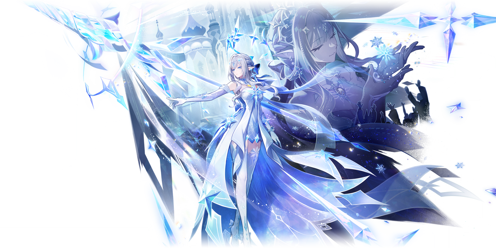
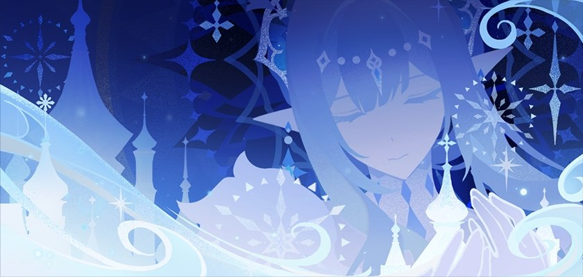
Ascension Stats
Prefarming guide
Assumes the character is getting triple crowned.
* Contains leaks and assumptions, as of
04-11-2026.
Tsaritsa
~419
~7.1M
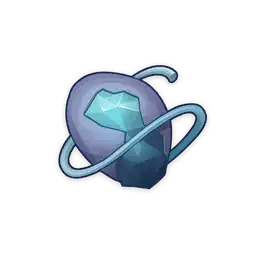
36
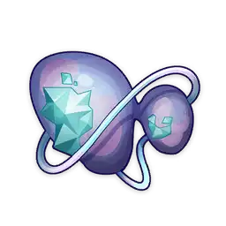
96
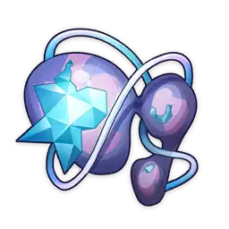
129
168
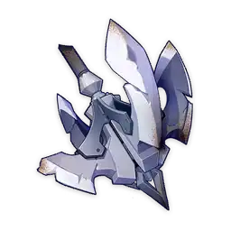
46
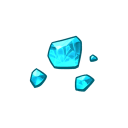
1
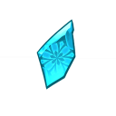
9
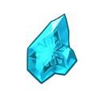
9
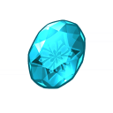
6
9
63
114
18
3
Tsaritsa's Signature weapon
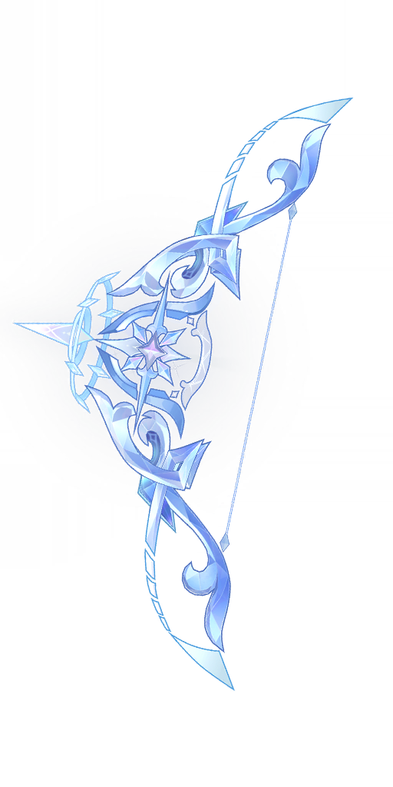
674 ATK
44.1% CD
- The equipping character gains White Crown's Bequest for 6s after using an Elemental Skill or Elemental Burst, increasing their ATK by 40% and Stellar Glimmer reaction CRIT DMG by 40%. Its duration is extended by 3s when the equipping character triggers a Stellar Glimmer reaction or deals Stellar Glimmer reaction DMG while White Crown's Bequest is active. This extension can occur once every 0.1s, up to 8 times per instance of White Crown's Bequest. Additionally, the equipping character regenerates 10 Elemental Energy when they trigger a Stellar Glimmer reaction or deal Stellar Glimmer reaction DMG, up to once every 15s.
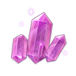
~907
~1.1M
15
23
27
23
27
41
5
14
14
6
- Talents
- Passives
- Constellations
Talents
Assumes the character is getting triple crowned.
Last updated 04-11-2026.
The Dawn Beyond the Everwinter (Lv. 10)
Normal Attack
Performs up to 5 consecutive shots with a bow.
Charged Attack
Performs a more precise Aimed Shot with increased DMG. While aiming, Cryo will accumulate on the arrowhead. A fully charged Cryo arrow will deal Cryo DMG.
Plunge Attack
Fires off a shower of arrows in mid-air before falling and striking the ground, hitting opponents along the path and dealing AoE DMG upon impact.

E - Polestar's Divine Judgment (Lv. 10)
Reveals the true nature of Transcendence, dealing AoE Cryo DMG and unleashing her power inX different ways depending on whether the skill is tapped or held.
Tap
Gains the Blessing of Love and throws the Palestar Crown, an heirloom of the imperial court.
The Palestar Crown follows the active character and
deals 2 instances of AoE Cryo DMG to
nearby opponents every 2s.
Radiance: Stellar Glimmer:
The second instance of DMG dealt by
each Palestar Crown attack becomes AoE Cryo DMG that is
considered DMG from the
corresponding Stellar Glimmer reaction.
Hold
Gains the Blessing of Honor and demonstrates the
consummate skill at arms passed down by the
imperial court.
In this mode, Anastasya's Normal Attacks are replaced by a sequence of up
to 5 attacks with the Blessed Armament: Dekhomenon,
dealing AoE Cryo DMG that cannot be
overridden by other Elemental Infusions. She cannot perform Charged Attacks in this mode.
Radiance: Stellar Glimmer: The final instance of DMG
from each Normal Attack performed
with the Blessed Armament becomes AoE Cryo DMG that is
considered DMG from the corresponding
Stellar Glimmer reaction.
Q - To the New World (Lv. 10)
Anastasya's current Blessing determines which Elemental Burst she can use and how she wields the power of Sealing.
To the New World
Can be used while Anastasya holds the Blessing of Love.
Deals AoE Cryo DMG and freezes the
Palestar Crown's duration.
During this time, all nearby party members deal increased Stellar Glimmer reaction DMG,
and the Palestar Crown deals 1 additional instance of AoE Cryo
DMG that is considered
Stellar-Conduct reaction DMG with each attack. Anastasya also Seals herself when she
switches off-field during this time. When her Sealed
state ends, she can use the special
unsealing Elemental Skill Palestar Edict: Triumph.
The Evernight Yields to Dawn
Can be used while Anastasya holds the Blessing of Honor.
Unleashes the power of the Blessed
Armament, dealing AoE Cryo DMG considered
Stellar-Conduct reaction DMG, and freezes the
Blessing's duration.
Anastasya also Seals up to 3
other party members. When the Sealed
state ends, Anastasya can use the special unsealing Elemental Skill Palestar Edict: Doom.
Radiance: Stellar Glimmer: All Stellar-Conduct reaction DMG described above is instead dealt as AoE Cryo DMG that is considered DMG from the corresponding Stellar Glimmer reaction.
Passives
The Radiant Reign of Night
All party members gain Accolades for 20s after Anastasya
uses her Elemental Skill Polestar's
Divine Judgment, increasing their CRIT DMG by 12%.
When a party member is Sealed, their Accolades are temporarily divided equally among
party members who are not Sealed until 8s after that
character's Sealed state ends.
Lament for the Lost
While Anastasya is in the party, Stellar Glimmer reactions triggered by any party member gain
the following effects:
· Stellar-Conduct: The Polestar Field will be
further
enhanced each time it grants a
buff, and creating a Starlight Prism will cause the Field to generate a buff instantly;
· Stellar Swirl: Stellar Swirl's base reaction
multiplier is increased by 15%. Newly
created Stellar Vortices and Drifting Vortices are also immediately raised to Level 2. This
level increase can trigger once every 1s.
Stellar Jubilee: Immaculate Return
Anastasya will be in the Radiance: Stellar-Conduct state
while within a Polestar Field, and
in the Radiance: Stellar Swirl state for 8s after a
party member triggers a Stellar Swirl
reaction nearby.
Party members trigger Stellar-Conduct/Stellar Swirl reactions instead of
Superconduct/Cryo Swirl reactions, respectively. Anastasya also increases party members'
Stellar-Conduct and Stellar Swirl base DMG by 0.7% for every 100 ATK she has, up to a
maximum increase of 14%.

The Falling Snow's Favor
Party members gradually restore HP while out of combat in Snezhnaya (excluding Nod-Krai).
Additionally, while Anastasya is in the party, the Eye of Graeae does not lose energy,
and its energy is immediately replenished to 30% if it is below 30%.
These effects do not apply in Domains, Trounce Domains, or the Spiral Abyss.
Constellations
1 - To Years Past, To Hearts Still Alight
The Ascension Passive The Radiant Reign of Night is
enhanced: Accolades also increase the ATK
of Cryo characters by 15% and the Elemental Mastery of characters of other Elemental Types
by 60.
Additionally, when a character is Sealed, the
division of Accolades will not cause the
sharing character's Accolades to be dispelled. When Anastasya is Sealed, the Accolades
she
grants to other characters will provide 300% of their original bonuses.
2 - To Winter, All Who Taste Its Bite
After Anastasya uses her Elemental Skill, Polestar's Divine
Judgment, the following effects
apply based on her current Blessing:
· Love: The CRIT DMG of Stellar Glimmer Reaction DMG
dealt by all party members is
increased by 60% for 30s;
· Honor: Anastasya's Normal Attacks, Elemental Burst
The Evernight Yields to Dawn, and
special Unsealing Elemental Skill Palestar Edict: Doom
deal 125% of their original DMG for
15s.
Additionally, Stellar Glimmer Reaction DMG dealt by all nearby party members is Elevated by 5%.
3 - To White Nights, Set Our Grief Afire
Increases the Level of the Elemental Burst To the New World by 3.
Maximum upgrade level is 15.
4 - To Tyrants, Sing The Rebel's Choir
Enhances Accolades, increasing CRIT DMG, ATK, and Elemental Mastery bonuses to 130% of their original values.
5 - March On, Till Rot's Last Ember Dies
Increases the Level of Polestar's Divine Judgment by 3.
Maximum upgrade level is 15.
6 - Look Up, a Dawn Unstained Shall Rise
After Anastasya uses her Elemental Skill, Polestar's Divine
Judgment, the following effects
apply based on her current Blessing:
· Love: The next time another character is
switched onto the field, an effect equivalent to
Palestar Edict: Triumph is triggered, dealing 250% of
its original DMG. Additionally,
Stellar Glimmer Reaction DMG dealt by all nearby party members is Elevated by 10%;
· Honor: The next time the Elemental Skill is
tapped, an effect equivalent to the third
attack of Palestar Edict: Doom is triggered, dealing
200% of its original DMG. If the other
party members are not Sealed, Anastasya is considered to
possess the Accolades of all party
members for this attack. Additionally, Stellar Glimmer Reaction DMG dealt by Anastasya is
Elevated by 20%.
The above effects last for 30s and can be triggered once every 15s. They are removed when other party members' Sealed status ends.